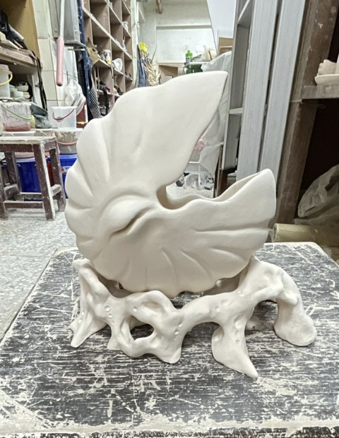

02

03

創作理念
以古生物鸚鵡螺為原型與自然重塑，探索生命與大地相依的共生關係。結合海洋與土地元素，
展現漫長演化中的堅韌與多變，並透過個人想像衍生出具備再生與復甦意象的系列生物。
釉藥加入火山岩石，調配與海洋像似深藍色，高溫燒製後留下微妙的礦物質感，與土坯表面的手捏生物紋理相互呼應，形成既粗礦又細膩的對話。
以海為靈感發想，運用自然元素和深海中的奇怪生物在作品上。以不同紋理呈現殼體形態，觸鬚向上流動表現生命流動。 從自然界有機形體出發，描繪螺旋、海洋、流體等意象，最終確立以「螺形」為造型核心。


★ 試作說明文字待補入。例如：以紙黏土或練泥製作縮小版模型，驗證草圖中的形體能否在實際製陶中實現，並調整各部位的重量分佈與重心。

根據試作結果調整邊緣弧度與底座比例，確保燒製後不會因重心偏移而傾倒。

★ 土坯說明待補入。例如：以拉胚機建立基本形，利用離心力在旋轉中拉出均勻的器壁厚度，是這次系列的基礎工序。

★ 說明文字待補入。例如：拉胚乾燥至皮革硬度後，以手捏技法加入有機凸起紋理，使每件作品保有獨特的手感個性。
釉藥實驗是我最苦惱的環節，花最多時間調配配方，畢竟只要窯不乖乖，同個配方出來的顏色可能會不同。 我測試了20幾種配方，從青冰裂釉、黑金錳釉到金紅石藍釉，嘗試釉藥之間的搭配與厚度對色澤和質感的影響，最終選定金紅石藍釉以高溫 1230°C 燒製，混搭冰裂綠釉 呈現冷澀的礦物質感與深藍水流光澤。


先以 800°C 素燒固化土坯，以噴釉的方式上色後再以 1230°C 進行釉燒。窯內溫度曲線對最終色澤影響深遠，每次開窯都是一次意外的驚喜。

★ 成品說明待補入。例如：歷經三個月的製作，這組共六件作品透過觸感、裂紋與光澤，訴說著生命在脆弱中重生的力量。
★ 說明文字待補入。例如：近距離觀察釉面，可見青灰釉在高溫冷卻後留下的細緻冰裂紋，與手捏紋理交織成獨特的視覺肌理。
Ceramics · 2026